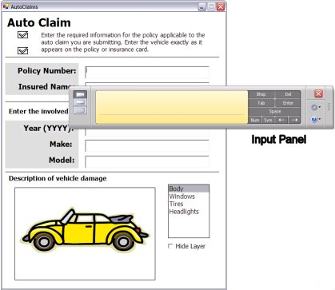

[PenInputPanel has been replaced by Microsoft.Ink.TextInput. Please refer to Programming the Text Input Panel.]
Description of using the PenInputPanel object to program the system-level Tablet PC Input Panel.
In Microsoft Windows XP Tablet PC Edition version 1.0, the system-level Tablet PC Input Panel provides a universal mechanism to accomplish text input across the Windows platform, but it does not provide programmatic access. In Windows XP Tablet PC Edition Software Development Kit (SDK) version 1.5 and later, the PenInputPanel object enables you to integrate text input tools directly into your applications, and provide a level of control not previously available. Starting with the Windows XP Tablet PC Edition 2005, the system-level Input Panel has been upgraded to include the in-place input functionality provided by the PenInputPanel object and more.
The following graphic shows Input Panel displayed over the Auto Claims Form Sample sample.

Input Panel supersedes the PenInputPanel by supplying the same in-place input functionality to any application running on Windows XP Tablet PC Edition 2005 or later without the need for additional code. This article on using the PenInputPanel object is provided for backward compatibility. Applications that already utilize the PenInputPanel object will function the same except that Input Panel will be displayed instead of the PenInputPanel when the application is run on Windows XP Tablet PC Edition 2005 or later.
If you are developing a new application for the Tablet PC and want to have an in-place user input solution, Input Panel provides this automatically on Windows XP Tablet PC Edition 2005 or later. There is no need to instantiate the PenInputPanel object.
There may be cases where you want to disable Input Panel. There are two ways to accomplish this. You can accomplish this programmatically or by setting a registry entry that disables Input Panel for your entire application.
To disable Input Panel programmatically, instantiate the PenInputPanel and set its AutoShow property to False.
using Microsoft.Ink;
// ...
private PenInputPanel theInputPanel;
// ...
private void Form1_Load(object sender, System.EventArgs e)
{
// Attach the Input Panel to a specific TextBox control.
theInputPanel = new PenInputPanel(textBox1);
// Disable the Input Panel for the TextBox.
theInputPanel.AutoShow = false;
}
To disable Input Panel for multiple controls in a single application, either instantiate a PenInputPanel object for each control and set the AutoShowproperty to False for each or instantiate a single PenInputPanel and move it from control to control as input focus changes. For more information about these two techniques, see the PenInputPanel Sample topic.
You can set a registry entry to disable Input Panel for your entire application. However, this will also disable it for common dialog boxes such as the File Open dialog box, the Print dialog box, and the File Save dialog box. This may make the user experience in your application inconsistent with other Tablet PC applications.
Setting the DisableInPlace registry key to zero prevents Input Panel user interface (UI) from appearing in an application. You must place the DisableInPlace registry key at HKEY_LOCAL_MACHINE\Software\Microsoft\TabletTip\. Then, add a new registry value by using the full path of the application in which you want to disable Input Panel. The following example registry entry disables Input Panel in an application called MyApp:
[HKEY_LOCAL_MACHINE \SOFTWARE\Microsoft\WindowsNT\TabletTIP\DisableInPlace]``"C:\Program Files\My App\MyApp.exe"=dword:00000000
If you still see a problem in your application after you disable the Input Panel UI, it may be necessary to disable the underlying framework, which queries your application for the caret location. For example, Input Panel may expose a bug in your application's caret tracking code. Turning off the caret tracking query also prevents the Input Panel UI from appearing. To disable the framework, set the EnableCaretTracking registry key to zero. Locate this key at HKEY_LOCAL_MACHINE\SOFTWARE\Microsoft\WindowsNT\CurrentVersion\AppCompatFlags\CaretTracking\.
[!Note]
Accessibility tools and speech technology in Windows XP also use this framework, so disabling the query also disables these features in your application.
Â
In order to use an API on a Web page, it must function in a partial trust environment. All PenInputPanel class members require full trust except the following:
These APIs function in a partial trust environment, such as a Web page, enabling you to instantiate a PenInputPanel object, attach it to a control, and disable Input Panel for that control. For more information, see Programming the Input Panel Using the PenInputPanel Class and Ink on the Web.
The rest of this topic describes how to use the PenInputPanel object in your Tablet PC–enabled applications. More specifically, this topic refers to the PenInputPanel object when discussing the programming object, the pen input panel when referring to the UI element, and the PC Input Panel (or Input Panel) when referring to the global input panel typically found on the side of the Tablet PC screen.
The following sections describe the PenInputPanel object and UI.
Â
Â